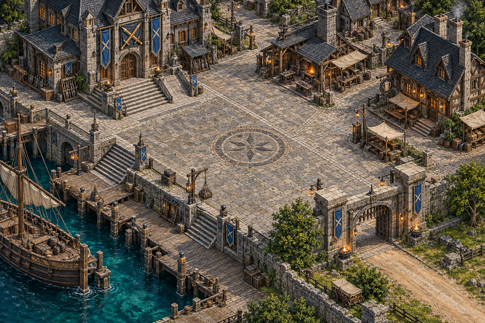

<!doctype html>
<html lang="zh-Hant"><meta charset="utf-8"><meta name="viewport" content="width=device-width,initial-scale=1"><title>港村與傭兵公會｜近景美術樣本</title>
<style>
*{box-sizing:border-box}body{margin:0;background:#111a18;color:#eee5cf;font:15px/1.6 system-ui,sans-serif}main{max-width:1600px;margin:auto;padding:18px}h1{font-size:24px;margin:0}p{color:#b7bda9}label{display:inline-block;padding:10px 14px;border:1px solid #485948;border-radius:6px;cursor:pointer;margin:8px 8px 12px 0}input{accent-color:#c7ac66}a{color:#dac48a}.scene{position:relative;width:100%;overflow:hidden;border:1px solid #55604a}.scene>img{display:block;width:100%;height:auto}.actor{position:absolute;width:96px;height:80px;background-size:384px 240px;background-repeat:no-repeat;background-position:0 0;transform:translate(-50%,-88%);pointer-events:none}.actor:after{content:attr(data-name);position:absolute;top:-3px;left:20px;min-width:56px;text-align:center;font-size:12px;background:#101911d9;color:#f1d38b;padding:1px 5px;border-radius:4px}.hero{left:52%;top:51%;background-image:url('../../../images/sprites/mercenary/companions-v1/war/walk.png')}.tank{left:48%;top:49%;background-image:url('../../../images/sprites/mercenary/companions-v1/bulwark/walk.png')}.ranger{left:56%;top:49%;background-image:url('../../../images/sprites/mercenary/companions-v1/wild/walk.png')}.healer{left:52%;top:56%;background-image:url('../../../images/sprites/mercenary/companions-v1/wish/walk.png')}#team:not(:checked)~.scene .actor{display:none}#large:checked~.scene .actor{width:128px;height:107px;background-size:512px 320px}#large:checked~.scene .actor:after{left:36px}.note{border-left:3px solid #b49856;padding-left:12px;margin-top:18px}small{color:#b7bda9}@media(max-width:700px){main{padding:10px}h1{font-size:20px}.actor{width:60px;height:50px;background-size:240px 150px}.actor:after{font-size:9px;min-width:36px;left:12px}#large:checked~.scene .actor{width:80px;height:67px;background-size:320px 200px}#large:checked~.scene .actor:after{left:20px}}
</style>
<main><h1>低語海島 · 港村與傭兵公會</h1><p>近景場景美術與人物比例檢視｜開發樣本，尚未接入遊戲。</p>
<input id="team" type="checkbox" checked><label for="team">顯示四人隊伍</label><input id="large" type="checkbox"><label for="large">放大角色比例比較</label>
<div class="scene"><div class="actor hero" data-name="玩家"></div><div class="actor tank" data-name="盾衛"></div><div class="actor ranger" data-name="遊俠"></div><div class="actor healer" data-name="補師"></div></div>
<div class="note">場景是新製作的原創美術；四人模型暫用既有素材，只檢視比例與辨識度，尚非新版人物。此頁沒有移動、戰鬥、存檔或發獎。正式地圖還需建立遮擋層、碰撞與可走資料，並分塊製作。</div>
<p><a href="harbor-walk-preview.html">在這張場景實際走動</a>　·　<a href="walk-prototype.html">開啟整島可走灰盒</a>　·　<a href="harbor-district-art-v1.png" target="_blank">查看原尺寸場景</a></p></main></html>
